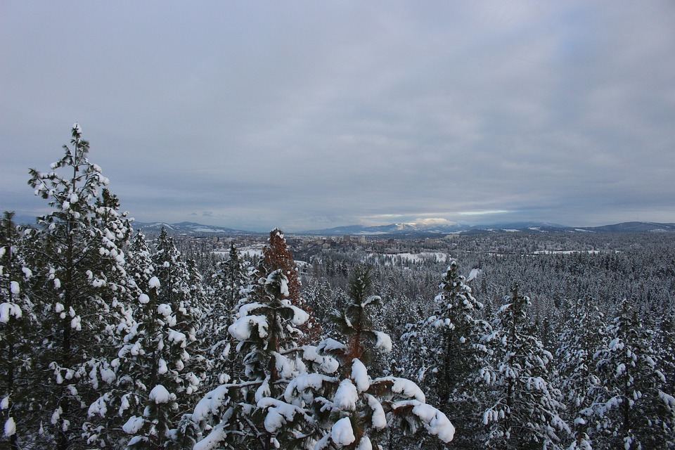
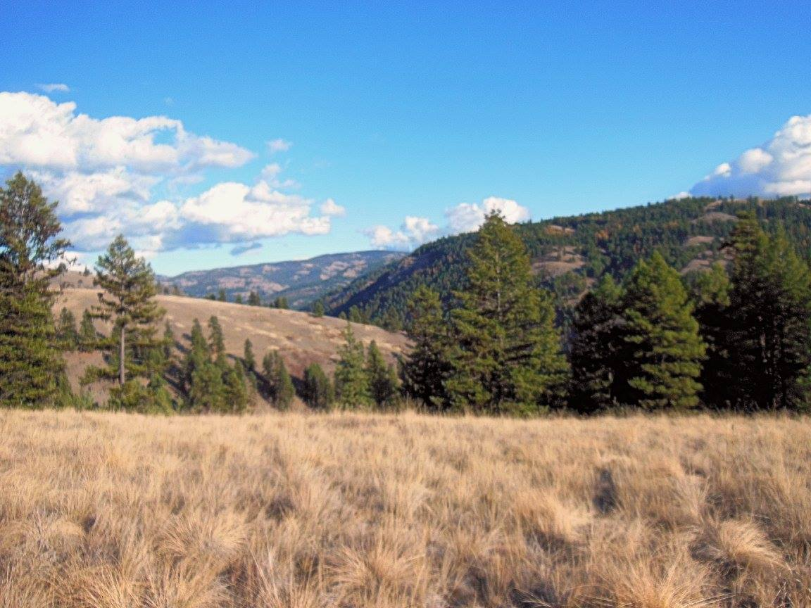

These are some of the interesting places Kala has been!
Kala's favorite place she has been is the Southworth Beach! The Southworth beach has a lot of fun activities you can do such
as hiking both the beach and the Banner Forrest. Another thing the Southworth beach offeres that most other
places don't is beach combing. After storms there will often be a lot of stuff that washes up on shore
including cool beach glass. The beach also has a ferry that will take you across the water to either West
Seattle or Vashon Island. The Southworth beach is a really cool area and can be a really fun place to bring
your dog!
Spokane offers a ton of
activites, although a lot of them aren't the best place for dogs to be. Activities that are fun to bring
your dog on are hiking trails, Spokane has pleanty of different trails to go on and has such a diverse
climate so you can experience different environments throughout the year. The temperature in Summer can
easily get into the 100's and the temperature in the winter can get into the negatives. Because of this you
can choose different times of the year to go for different feels on the hike, I know Kala would love to go
on a nice hike in the snow! Spokane also offers great places to go hunting and camping, there is a lot of
land around the city that offers great places to go both camping and hunting which is one of Kala's all time
favorite things!

The last big place Kala has been is to our property in Eastern Washington for camping. It's a pretty long
drive so we normally schedule 1-2 weeks a year to go and just get away. Family and friends will join us,
it's like a big family and friends gathering! Kala loves going to our property, we are constantly going on
walks and there is a ton of land for her to explore! On top of that there are a ton of chipmunks and
squirrels for her to chase around! It can soometimes be a little worrying though because there are also a
lot of things there that can hurt her such as cougers, black and brown bears, and rattle snakes. When she is
off exploring we make sure not to let her go to far away or be gone for to long. When we go next year I have
a drone now that I am excited to watch her explore on!
